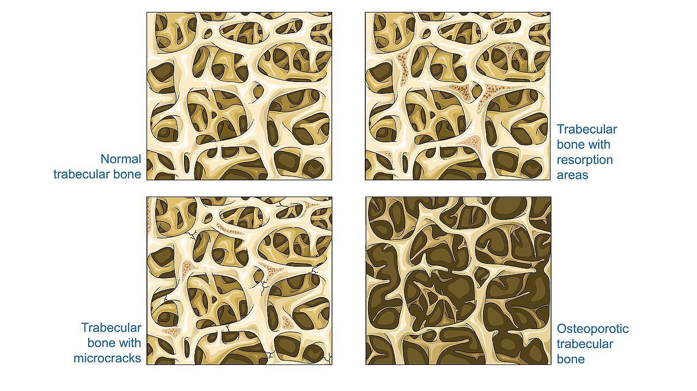
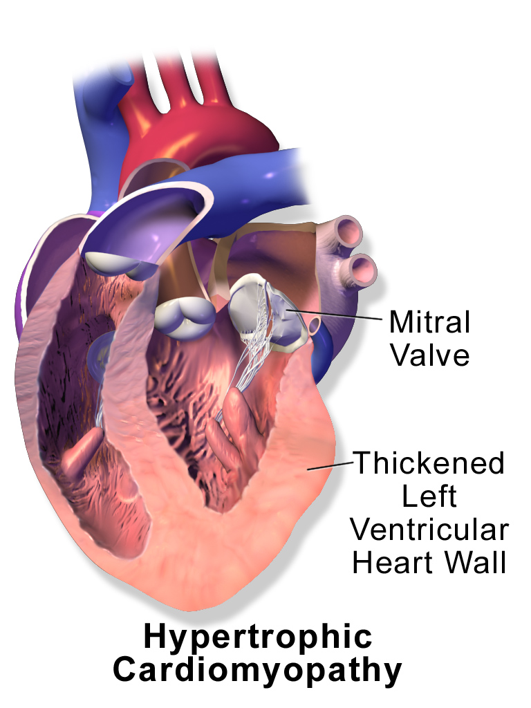
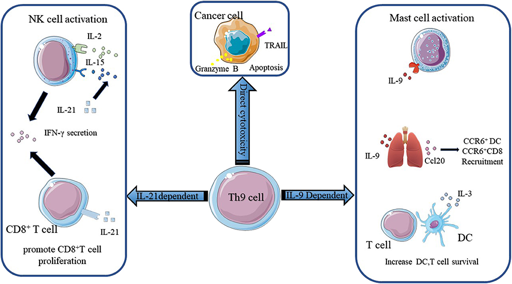
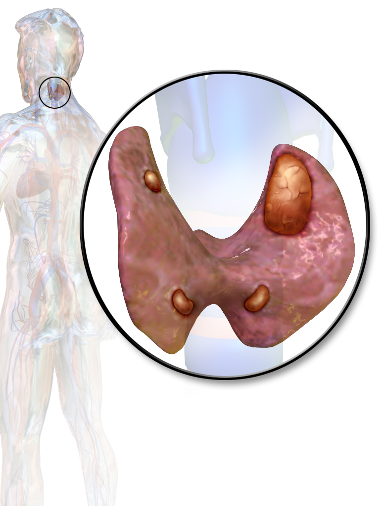
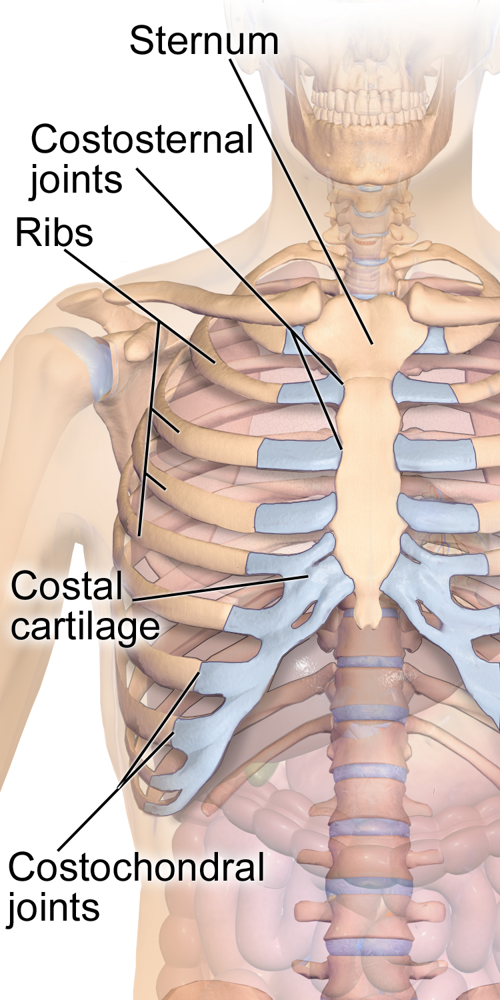

Bones and Skeletal Physiology
Bone looks like the most still tissue in the body. It is really one of the busiest. Bone is a living two-phase composite. Mineral crystals grow inside a scaffold of collagen. Cell teams tear it down and build it back all the time. Those teams take orders from two different bosses. The first boss is mechanics. Osteocytes are bone cells buried in the matrix. They read the strain made by every step you take. Then they change the local bone mass to match. The skeleton ends up exactly as strong as its loading history demands. The second boss is chemistry. The skeleton holds roughly 1,000–1,200 g of calcium and about 600 g of phosphorus. The parathyroid glands will spend that mineral without hesitation. They do it to hold plasma ionized calcium within a few percent of 1.2 mmol/L. This module treats bone as physiology. That means gradients, pumps, feedback loops, forces and time courses. The named structures are only the hardware those processes run on.
By the end of this module you can
- Explain what the mineral and collagen parts of bone matrix each do. Mineral handles squeezing. Collagen handles pulling. Predict how bone fails when either part is faulty.
- Describe who does what among osteoprogenitor cells, osteoblasts, osteocytes and osteoclasts. Include the proton pump and the cathepsin K steps of resorption, which is bone breakdown.
- Compare intramembranous and endochondral ossification. Ossification means bone forming. Explain how the epiphyseal plate works as a cartilage conveyor that makes bone longer.
- Trace the bone remodeling cycle in real time. Explain the RANKL / OPG / RANK switch that sets how fast bone is removed.
- State the mechanostat model in microstrain. Predict what bone does with disuse, with normal loading and with overload.
- Draw the negative feedback loop that controls ionized calcium. Name the variable, the sensor (the calcium-sensing receptor), the integrator, the effectors and the responses. Give normal values and time courses.
- Explain what parathyroid hormone, calcitriol, FGF23 and calcitonin do to gut, kidney and bone. Read a corrected calcium.
- Explain why joints have so little friction, using interstitial fluid pressurization. Work out muscle force from lever arms in a third-class lever.
- Put the stages of fracture healing in order. Explain why interfragmentary strain decides whether callus or direct bone union forms.
Section 1Bone as a Working Tissue: Composite Mechanics and Cellular Machinery

A two-phase composite: why bone is stiff and tough at the same time
Engineering materials usually force a trade. Ceramics are stiff and resist being crushed. But they shatter. Polymers stretch and soak up energy. But they sag under load. Bone refuses to choose. By wet weight the matrix is roughly 65 percent mineral, 25 percent organic material and 10 percent water. About 90 percent of the organic part is type I collagen. The rest is a small set of non-collagenous proteins such as osteocalcin and osteopontin. They are few, but the tissue needs them. The mineral is hydroxyapatite, roughly Ca10(PO4)6(OH)2. It is laid down as flat, plate-like crystals. They are only 2–5 nm thick and about 50 nm long. Those crystals start inside the collagen fibril. They form in the 40 nm gap zones. Those gaps come from the staggered 67 nm packing of tropocollagen molecules. So bone is not a mixture. It is one material threaded through another at the nanometer scale.
That build explains the mechanical numbers. Cortical bone has an elastic modulus near 17–20 GPa along its long axis. Elastic modulus, also called Young’s modulus, is a measure of stiffness. Bone takes a squeeze of roughly 170–190 MPa before it fails. It takes a pull of roughly 120–135 MPa. The mineral carries most of the squeeze. The collagen carries most of the pull. Shear is the weak direction, at about 50–70 MPa. Shear means one layer sliding past another. That is why twisting injuries make spiral fractures. They do it at loads far below what the same bone handles in pure squeezing. Bone is also anisotropic. That means it is stronger in one direction than in another. It is about twice as strong along its usual loading line as across it. Bone is viscoelastic too. It is stiffer and stronger when the load comes on fast. A fall loads bone in milliseconds. It finds bone stiff but brittle. Slow loading finds bone softer and better at soaking up energy.
In the clinic the two phases fail on their own, and the failures look different. In osteogenesis imperfecta the collagen phase is faulty. The mineral-to-matrix ratio can even be high. The bones are brittle and break with almost no force. In osteomalacia and rickets the mineral phase is short. Calcium or phosphate or vitamin D is not enough. The collagen scaffold gets laid down normally. It simply never hardens. So bone bends, aches, and shows wide unmineralized osteoid seams. Osteoid is bone matrix that has not taken on mineral yet. In osteoporosis the material itself is basically normal. There is just less bone. Three diseases. Three different points of attack on the same composite.
Four cell types, one coordinated unit
Every job bone does comes from four cell types working in order. Osteoprogenitor cells are mesenchymal stem cells. They live in the periosteum, the endosteum and the marrow stroma. Two signals, Runx2 and osterix, lock them into the osteoblast line. Osteoblasts are boxy cells that secrete. They lay down unmineralized matrix called osteoid at roughly 1 µm per day. Then they set off its mineralization. Their key enzyme trick is alkaline phosphatase. This enzyme breaks apart inorganic pyrophosphate. Pyrophosphate is a strong natural blocker of crystal growth. Where alkaline phosphatase is working, pyrophosphate drops. Hydroxyapatite is then allowed to start forming. Where the enzyme is missing, the matrix stays soft. This is why serum alkaline phosphatase rises whenever bone is being built fast. It is also why children run values that would look abnormal in an adult and are completely normal for them.
About 10–20 percent of osteoblasts get buried in their own product. Those become osteocytes. Osteocytes make up 90–95 percent of all bone cells. They can live 20–25 years. Each one sits in a small space called a lacuna. It reaches out with fine arms through tiny tunnels called canaliculi. The arms touch each other, so the cells form one connected web. The total cell surface in that web runs to about a thousand square meters in an adult skeleton. This web is the sense organ of bone. Section 3 is mostly about what it senses. The osteoblasts left on the surface flatten out into bone lining cells. They cover resting surfaces and act as a gate.
Osteoclasts come from a completely different family line. They grow from the monocyte and macrophage line. They are giant cells with 4–20 nuclei each. A working osteoclast seals off a patch of bone with a ring of actin rich in integrin. Then it acts like a tiny stomach turned upside down. Carbonic anhydrase II makes H+ and HCO3- out of CO2 and water. A vacuolar H+-ATPase pumps the H+ across the ruffled border into the sealed pocket. The pH there drops to about 4.5. A chloride channel sends chloride along to balance the charge. A Cl-/HCO3- exchanger on the far side keeps the cell itself from turning alkaline. Acid dissolves hydroxyapatite. Next comes cathepsin K. It is a protein-cutting enzyme that works best in acid. It digests the type I collagen the acid just exposed. Both halves are needed. Block the pump and the mineral will not dissolve. That happens in some forms of osteopetrosis, and with certain drugs. Block cathepsin K and demineralized collagen piles up.
| Cell | Origin | Core job | Key machinery |
|---|---|---|---|
| Osteoprogenitor | Mesenchymal stem cell | Keep the osteoblast supply going | Runx2, osterix, Wnt signaling |
| Osteoblast | Mesenchymal | Lay down osteoid, allow mineralization | Type I collagen, alkaline phosphatase, RANKL, P1NP release |
| Osteocyte | Buried osteoblast | Feel strain, direct remodeling, release FGF23 | Canalicular network, sclerostin, RANKL, FGF23 |
| Bone lining cell | Flattened osteoblast | Cover the resting surface, control access | Tight surface layer, digests leftover osteoid |
| Osteoclast | Monocyte/macrophage | Dissolve the mineral, then the matrix | H+-ATPase, carbonic anhydrase II, cathepsin K, TRAP, RANK |
Architecture follows loading: cortical shell, trabecular lattice
The same material shows up in two arrangements with two different jobs. Cortical (compact) bone is only 5–10 percent open space. It forms the shaft walls of long bones. It holds roughly 80 percent of skeletal mass. Yet it carries only about 20 percent of the inside surface area. It is built out of osteons. An osteon is a set of bone rings wrapped around a central canal. That canal carries a capillary and a nerve. The collagen fibers change direction from ring to ring, like the layers in plywood. A crack that starts gets turned aside instead of running through. Trabecular (cancellous) bone is 50–90 percent open space. It fills the vertebral bodies and the ends of long bones. It flips the ratio. It is 20 percent of the mass and 80 percent of the surface.
Two things follow right away. First, mechanics. A hollow tube resists bending far better per gram than a solid rod. Bending stiffness rises with the fourth power of the radius. So putting cortical bone out at the edge and leaving the middle for marrow is smart design, not an accident. Second, physiology. Cells work on surfaces. So trabecular bone turns over about 25 percent per year. Cortical bone turns over about 3 percent per year. That is why any state of fast bone removal shows up in trabecular sites first. Loss of estrogen does it. So do hyperparathyroidism, steroid therapy and long bed rest. The first places to show it are the vertebrae, the femoral neck and the distal radius. It is also why a crushed vertebra is often the first event in osteoporosis.
Bone also takes far more blood than students expect. It gets roughly 5–10 percent of resting cardiac output. A nutrient artery drills into the shaft and feeds the inner two-thirds of the cortex. Periosteal vessels feed the outer third. Metaphyseal and epiphyseal vessels feed the ends. This double supply matters a great deal in trauma. Strip the periosteum during surgery and healing slows. Cut the nutrient artery in a mid-shaft fracture and healing slows too. A few sites get their blood backwards, from the far end. A fracture there can cut the supply off completely. The femoral head, the scaphoid and the talus all work this way. That is why fractures there carry a real risk of avascular necrosis, which is bone dying for lack of blood.
Bone is a tiny-scale composite. Mineral carries squeezing. Collagen carries pulling. It is built as a dense outer tube for stiffness and a high-surface inner lattice for trading chemicals.
Section 2Building the Skeleton: Ossification, the Growth Plate and Modeling

Two routes to bone, one mineralization mechanism
Bone forms by two routes. They differ in the middle step, not in the end result. In intramembranous ossification, mesenchymal cells gather and turn straight into osteoblasts. Those cells secrete osteoid inside a fibrous membrane. This route makes the flat bones of the skull cap, the face bones and the collarbone. The plates harden from centers outward. So the edges are still unjoined at birth. Those soft gaps are the fontanelles. They let the skull mold as it passes through the birth canal. They also leave room for huge brain growth in the first year. The front fontanelle closes between 12 and 24 months. In endochondral ossification, the body builds a hyaline cartilage model first. Then it replaces that model with bone, step by step. Nearly every other bone forms this way. That includes long bones, vertebrae, the pelvis and the base of the skull. The process keeps running into the late teens. It is how bones get longer.
The endochondral sequence is worth tracing. Each step opens the door for the next. Chondrocytes are cartilage cells. The ones in the middle of the model swell up. They release vascular endothelial growth factor, a signal that calls in blood vessels. The sleeve around the model, the perichondrium, turns into periosteum. It lays down a collar of bone by the intramembranous route. The swollen chondrocytes then load their matrix with mineral. That cuts off diffusion. Cartilage has no blood vessels and lives by diffusion alone. So those chondrocytes die and leave empty spaces behind. A periosteal bud pushes into those spaces. It carries capillaries, osteoprogenitor cells and osteoclast precursors. That creates the primary ossification center. After birth the same thing happens at each end of the bone. Each of those is a secondary ossification center. Cartilage survives in exactly two places. One is the joint surface. The other is the epiphyseal plate.
Mineralization uses the same chemistry on both routes. Osteoblasts pinch off tiny sacs called matrix vesicles. Each sac is loaded with calcium, phosphate transporters and alkaline phosphatase. Phosphate builds up inside the sac. Alkaline phosphatase destroys the pyrophosphate that was blocking crystals. The first crystals form. Then the sac bursts and seeds crystal growth into the collagen gap zones. Fresh osteoid does not take on mineral right away. There is a mineralization lag time of about 10–15 days. That is why an osteoid seam 10–15 µm wide is normal on a biopsy. A seam of 30 µm or more points to osteomalacia. Primary mineralization reaches roughly 70 percent of the final mineral content in days to weeks. Secondary mineralization is the slow tidying of crystal size and packing. It takes months to years. It is what makes older bone stiffer but easier to snap.
The growth plate as a conveyor belt
Bones get longer at the epiphyseal plate and nowhere else. The plate has five zones. Those zones are really five stages of one chondrocyte moving down a production line. The line runs from the epiphysis, the bone end, toward the diaphysis, the shaft. The plate is not used up as growth goes on. It does not get thinner either. Cartilage is added at the top just as fast as bone replaces it at the bottom. So the plate stays about the same thickness. The shaft lengthens under it. The bone end gets carried further and further from the middle of the shaft.
| Zone (epiphysis to diaphysis) | What the cell is doing | Why it matters |
|---|---|---|
| Resting (reserve) | Chondrocytes sit still, matrix is stored | Holds the stem cell supply. Anchors the plate to the bone end. |
| Proliferation | Fast cell division, cells stack in columns | Growth hormone acts here through IGF-1. Sets how fast new cells arrive. |
| Hypertrophy | Cell volume grows 5–10 fold | Gives most of the real lengthening each day. The swollen cells make this the weakest zone, so it is where the bone gives way in slipped capital femoral epiphysis. |
| Calcification | Matrix takes on mineral, diffusion stops, chondrocytes die | Gets the scaffold ready. This zone fails in rickets, where it never takes on mineral. |
| Ossification | Vessels move in, osteoblasts lay bone on cartilage struts | Turns the scaffold into trabecular bone of the metaphysis. |
The rates are worth knowing. Peak height velocity is roughly 9 cm per year in girls, at about age 12. It is roughly 10 cm per year in boys, at about age 14. The plate at the lower end of the femur alone adds on the order of 9–10 mm per year in mid-childhood. Growth hormone drives the dividing zone. It works mostly through IGF-1, made in the liver and locally in the plate. Thyroid hormone is required as well. Chondrocytes cannot mature and bone cannot form normally without it. That is why untreated hypothyroidism from birth causes very short stature. Too much glucocorticoid shuts the plate down. That is why long-term steroid therapy stunts growth.
The surprising controller is estrogen. It works the same way in both sexes. Estrogen climbs at puberty. At first it speeds growth up. Then it shuts the plate down by using up the pool of dividing cells. The plates usually fuse at 14–16 years in girls and 16–18 in boys. The clinical proof is striking. Some men cannot make estrogen because they lack aromatase. Others cannot respond to it because their estrogen receptor is broken. These men keep growing into adulthood. They reach extreme height. Their plates are still open on x-ray into their twenties. Give such a man estrogen and the plates close. Testosterone alone does not do it. Testosterone turned into estradiol does.
Modeling: changing shape while keeping strength
Modeling means osteoblasts and osteoclasts working on different surfaces, each on its own. It changes a bone’s shape and size. It is the main process in childhood. The periosteum adds bone to the outside. The endosteum takes bone away from the inside. So the shaft gets wider and the marrow cavity gets bigger. The cortex never becomes absurdly thick. The flared end of the shaft gets narrowed as the shaft grows. Osteoclasts trim it from the outside. That trimming is called funnelization. Compare this with remodeling in Section 3. There, removal and building are linked on the same surface. The goal is renewal, not reshaping.
Adding bone to the outer surface never fully stops. Even after the plates fuse, adults keep adding bone to the outside of the cortex. They keep losing it from the inside. Bending resistance depends on the fourth power of the outer radius. So getting wider partly makes up for walls getting thinner with age. A bone with thin walls but a wide shaft keeps much of its bending strength. Men widen this way more than women do. That is part of why male bones stay more forgiving with age, even when a bone density scan looks the same.
Peak bone mass arrives in the late teens to the late twenties. The exact age depends on the site. Roughly 90 percent of it is banked by age 18. The message is blunt. The biggest single thing that sets your fracture risk at 75 is how much bone you banked before 25. After about age 40, both sexes lose about 0.5–1 percent of bone mineral density per year. Women lose another 2–3 percent per year at trabecular sites. That extra loss runs for 5–10 years after menopause. Estrogen leaving takes the brake off osteoclast recruitment.
Bones get longer only by replacing cartilage at the epiphyseal plate. They get wider only by adding bone on the outer surface. Growth hormone, thyroid hormone and estrogen drive it. Estrogen both speeds growth up and finally ends it.
Section 3Remodeling: The Mechanostat and the RANKL Switch

The remodeling cycle in real time
Roughly 10 percent of the adult skeleton is replaced every year. The work is done by basic multicellular units, or BMUs. About 1–2 million of them are active at any moment. A new one starts somewhere in your skeleton about every 10 seconds. The cycle always runs in the same order. Its timeline is lopsided, and that matters. Activation comes first. Osteocytes signal that a patch needs work. Lining cells pull back. Osteoclast precursors are called in. Resorption is next. Osteoclasts dig out a cavity 50–100 µm deep over about 2–3 weeks. On trabecular surfaces they cut a trench. Through cortical bone they tunnel a “cutting cone”. Reversal is a 1–2 week pause. Single-nucleus cells clean the surface and lay down a cement line. Formation follows. Osteoblasts refill the cavity with osteoid over 3–4 months. Mineralization comes after that. Quiescence ends the cycle. Lining cells cover the surface again.
That lopsided timing matters more than any other number here. Three weeks to dig. Four months to refill. It drives much of bone pharmacology and bone disease. Anything that starts more BMUs per unit time leaves more half-finished holes open at once. That temporary shortfall is called the remodeling space. It explains a lot. Hyperthyroidism, hyperparathyroidism and early menopause all cause a fast drop in measured bone density. Part of that drop can be undone. It also explains the first year on an antiresorptive drug. Density jumps 3–5 percent right away. The drug simply lets the holes already dug get filled in.
Why remodel at all? There are three reasons. The first is repair. Loading over and over makes microcracks roughly 30–100 µm long. Those cracks cut osteocyte arms. The dying osteocytes are the signal that marks the spot. The BMU then takes out the cracked bone. The second reason is adaptation. Remodeling lets bone re-aim itself when the loading changes. The third is mineral access. Remodeling is one of the levers the calcium loop of Section 4 can pull. Shut remodeling down too hard for too long and microcracks pile up. That is the mechanism behind unusual femur fractures after many years of bisphosphonate use.
Mechanotransduction: how the osteocyte reads a footstep
Whole-bone strain is tiny. Hard activity bends cortical bone by about 1,000–1,500 microstrain (µε). A total of 1,000 µε equals a 0.1 percent change in length. That is far too small for a cell to feel by membrane stretch alone. Fluid is the amplifier. Loading squeezes the network of lacunae and canaliculi. That drives fluid past the osteocyte arms. The moving fluid drags on the cell membrane and its anchor threads. That drag runs about 0.8–3 Pa. The drag is what the cell actually senses. The signal is fluid flow. So it exists only while the strain is changing. A steady load makes no flow and sends no signal. This is why standing still all day does nothing for bone. It is also why the loading that builds bone must move, come on fast, and hit the bone in an unusual pattern.
Harold Frost called this the mechanostat. It is a plain negative feedback controller. It aims at a range, not at a single set point. Below roughly 200 µε the bone counts as unused. Removal wins and bone is lost. Between roughly 200 and 2,500 µε the bone sits in its adapted window. Building matches removal. Above roughly 2,500–4,000 µε the bone is overloaded. Modeling adds bone. Bone starts to give way near 7,000 µε. It fractures near 25,000 µε. Now name the loop parts. The variable is local tissue strain. The sensor is the osteocyte. The integrator is which genes that osteocyte turns on. The effectors are osteoblasts and osteoclasts. The response is a change in local bone mass that pulls strain back toward the window. Notice what is controlled. It is strain, not mass. Bone mass is only how the system hits its strain target.
The molecular output is neat and cheap. A loaded osteocyte makes less sclerostin. Sclerostin blocks the Wnt/β-catenin pathway, a growth signal inside the cell. Less sclerostin means more Wnt signaling in osteoblast precursors. More Wnt signaling means more bone built. An unloaded osteocyte does the reverse. It also puts out more RANKL. This is why bed rest or spaceflight costs roughly 1–1.5 percent of bone per month at the hip and spine. One month of unloading costs about what a whole year of ordinary age-related loss does. It is also why romosozumab, an antibody against sclerostin, builds bone. And it explains the loading advice that works. Impact and resistance build bone. That means jumping, running and heavy lifting, not swimming or cycling. About 40 loading cycles use up the response. So short bouts with rest between them beat one long, dull session.
RANKL, OPG and the final common pathway
Almost every hormone and drug that changes bone mass works through one switch. That switch has three proteins. Osteoblasts and osteocytes make RANKL. The full name is receptor activator of nuclear factor kappa-B ligand. Osteoclast precursors carry its receptor, called RANK. RANKL binds RANK. With M-CSF also present, that makes the precursors fuse, mature, switch on and stay alive. The same osteoblast family also puts out osteoprotegerin (OPG). OPG is a decoy receptor that floats free. It soaks up RANKL before RANKL can reach RANK. So the rate of bone removal is not set by RANKL alone. It is set by the RANKL/OPG ratio. That design has a deep consequence. Most hormones cannot order osteoclasts around directly, because osteoclasts lack the receptors. The bone-building family tells the bone-removing family what to do.
| Signal | Effect on RANKL/OPG | Net bone effect | Note for the clinic |
|---|---|---|---|
| PTH, continuous | Ratio rises sharply | Net bone removal | Primary hyperparathyroidism. Cortical bone is lost. |
| PTH, intermittent daily pulse | Building wins | Net bone building | Teriparatide. Same molecule, opposite result, set by timing. |
| Calcitriol | Ratio rises (plus gut Ca absorption) | Frees mineral, allows mineralization | The net effect on bone depends on how much calcium is coming in. |
| Estrogen | Ratio falls. More osteoclasts die. | Bone is spared | Menopause takes the brake off. Trabecular bone is lost fast. |
| Glucocorticoid excess | Ratio rises. Osteoblasts die. | Strong bone loss | The most common cause of drug-induced osteoporosis. |
| Mechanical loading | Ratio falls. Sclerostin falls. | Bone is built | Local. Needs movement. Depends on how fast the load comes on. |
| IL-1, IL-6, TNF (inflammation) | Ratio rises | Loss at the spot and body-wide | Erosions in rheumatoid arthritis. Holes in myeloma. |
| Denosumab (anti-RANKL antibody) | RANKL neutralized | Strong block on bone removal | A drug that acts like OPG. Bone is lost fast if it stops suddenly. |
Two clinical facts drop straight out of that table. The first is the parathyroid hormone paradox. Given nonstop, it destroys bone. Given as one shot a day, it builds bone. A short pulse helps osteoblasts survive and turns on Wnt signaling. Steady exposure keeps RANKL high instead. Timing flips the sign, not dose size. The second is coupling. Removal and building are coupled. Osteoclasts release TGF-β and IGF-1 that were stored in the matrix. Those signals call in osteoblasts. So any drug that stops removal will slow building too, in time. No drug blocks bone removal and leaves bone formation untouched.
Osteocytes turn mechanical strain into a chemical signal. They do it by adjusting sclerostin and RANKL. The RANKL/OPG ratio is the final switch. Loading, hormones, inflammation and drugs all set the rate of bone removal through it.
Section 4Calcium and Phosphate Homeostasis: The Skeleton as a Bank

The regulated variable and the daily ledger
Total plasma calcium normally runs 8.5–10.5 mg/dL (2.12–2.62 mmol/L). That number is only bookkeeping. Roughly 45 percent of plasma calcium is stuck to protein, mostly albumin. About 10 percent is tied up with citrate, phosphate and bicarbonate. Only about 45–50 percent floats free as ionized calcium. That is 4.4–5.4 mg/dL, or 1.10–1.35 mmol/L. Ionized calcium is the part that does the work. It is also the part the body regulates. It steadies voltage-gated sodium channels. It sets off neurotransmitter release. It links excitation to contraction. It takes part in the clotting cascade. The control system does not know or care what the total is.
Two corrections follow. The first is for albumin. Every 1 g/dL of albumin carries roughly 0.8 mg/dL of the measured total calcium. So use corrected calcium = measured Ca + 0.8 × (4.0 − albumin in g/dL). Take a malnourished patient with albumin 2.0 g/dL and calcium 7.6 mg/dL. The corrected calcium is 9.2 mg/dL. That patient is perfectly normocalcemic. The second correction is for acid and base. Alkalosis uncovers more negative charge on albumin. Albumin then grabs more calcium. So ionized calcium falls roughly 0.05 mmol/L for every 0.1 unit rise in pH. Total calcium does not change at all. This is what causes the tingling lips and the cramped hands of a sudden hyperventilation attack. It is also why an anxious patient can have real tetany with a completely normal calcium panel.
The daily ledger puts the numbers in perspective for a typical adult. Diet brings in about 1,000 mg per day. Roughly 300 mg of that gets absorbed. About 100 mg is secreted back into the gut. So the net gain is about 200 mg. The kidneys filter a huge load. It runs on the order of 10,000 mg per day of the calcium not bound to protein. They take back about 98 percent of it. So urine carries out about 200 mg per day. Intake matches output, so the person is in balance. Meanwhile remodeling moves roughly 500 mg per day out of bone and 500 mg per day back in. That bone traffic is the buffer. The fluid outside the cells holds only about 1,000 mg of calcium in total. Without a store you can reach fast, one missed meal would be dangerous.
The loop, component by component
Say the loop out loud. The variable is plasma ionized calcium. The sensor is the calcium-sensing receptor (CaSR). It is a G-protein-coupled receptor on the parathyroid chief cell. Its set point sits near 1.2 mmol/L. The integrator is the parathyroid gland. It turns how full the receptor is into a secretion rate. The effectors are the kidney tubule, bone and, by an indirect route, the intestine. The response is a rise in ionized calcium. That rise refills the CaSR and turns the signal off. Now notice the backwards logic that catches every student. The CaSR blocks secretion. Calcium binding shuts PTH down. So when calcium falls, the block lifts and secretion rises. The curve is a steep inverse S-shape. A fall of only 0.1 mmol/L in ionized calcium can double PTH within minutes.
Parathyroid hormone is a peptide of 84 amino acids. Its half-life in plasma is only 2–4 minutes. That makes it a fast signal the body can steer tightly. It has three actions. In the kidney, within minutes, it takes back more calcium. It does that in the distal convoluted tubule and the connecting tubule, by putting the TRPV5 channel into the membrane. At the same time it dumps phosphate into the urine. It pulls the NaPi-IIa cotransporter out of the proximal tubule to do that. In bone, over hours, PTH raises the RANKL/OPG ratio. That frees calcium and phosphate together. Back in the kidney again, PTH switches on 1-alpha-hydroxylase (CYP27B1). That enzyme turns 25-hydroxyvitamin D into active calcitriol. Calcitriol then raises calcium absorption in the gut over 24–48 hours. The three arms run on purposely different clocks. The kidney arm covers the next hour. The bone arm covers the rest of the day. The gut arm covers the day or two after that.
Why dump the phosphate? Because breaking down bone releases calcium and phosphate together. They come out in the fixed ratio of hydroxyapatite. If the phosphate stayed, the calcium–phosphate product would climb. The two ions would settle out in soft tissue. Ionized calcium would then fall. That is the exact opposite of what the body wants. Sending phosphate out in the urine is what lets PTH raise calcium on its own. It is one of the tidiest pieces of teamwork in endocrine physiology. It is also why primary hyperparathyroidism shows a high calcium with a low phosphate.
Calcitriol, FGF23 and the minor player
Vitamin D is not really a vitamin. It is a steroid prohormone. Ultraviolet B light hits the skin. It turns 7-dehydrocholesterol into cholecalciferol, or D3. The liver adds an OH group at position 25. That makes 25-hydroxyvitamin D. This is the storage form, with a half-life of 2–3 weeks. It is the form the lab measures. Levels above 30 ng/mL are generally counted as enough. The kidney then adds the activating OH group at position 1. That makes 1,25-dihydroxyvitamin D, better known as calcitriol. Calcitriol circulates at only 20–60 pg/mL and lasts hours. It behaves like the steroid hormone it is. It enters gut lining cells and binds a receptor in the nucleus. It then turns up production of the TRPV6 calcium channel, the shuttle protein calbindin-D9k, and the calcium pump on the far side of the cell. On a normal intake the gut absorbs roughly 25–35 percent of the calcium you eat. That is the 300 mg out of 1,000 mg in the ledger above. That share can be pushed to 60–70 percent during growth, pregnancy and breastfeeding, or when vitamin D is short.
FGF23 is the phosphate version of the same idea. Tellingly, osteocytes secrete it. Bone regulates its own raw material supply. Rising phosphate and rising calcitriol both trigger its release. FGF23 works through a co-receptor called Klotho. It pulls the NaPi cotransporters out of the proximal tubule, so phosphate leaves in the urine. At the same time it shuts down 1-alpha-hydroxylase. Less calcitriol is made. So the gut absorbs less phosphate too. It is a clean negative feedback loop for phosphate. It runs alongside the calcium loop, and sometimes against it.
Calcitonin comes from the parafollicular C cells of the thyroid. It is released when calcium rises. It shuts down the osteoclast ruffled border within minutes. It is genuinely powerful in fish. It matters in mammals that are growing fast or making milk. In adult humans it is close to useless. Patients with medullary thyroid carcinoma have huge calcitonin levels and normal calcium. Patients whose thyroid has been removed entirely have no calcitonin and normal calcium. Calcitonin is a handy tumor marker and a modest drug. It is not a pillar of calcium control.
| Hormone | What triggers its release | Gut | Kidney | Bone | Net on plasma Ca / PO4 |
|---|---|---|---|---|---|
| PTH | Low ionized calcium (via CaSR) | Indirect, through calcitriol | Takes back more Ca. Sends out more phosphate. Turns 1α-hydroxylase up. | Breakdown up (via RANKL) | Ca up, PO4 down |
| Calcitriol | PTH, low phosphate, low calcium | Takes in more Ca and PO4 | Takes back a little more Ca and PO4 | Allows mineralization. Frees mineral when needed. | Ca up, PO4 up |
| FGF23 | High phosphate, high calcitriol | Takes in less PO4 (less calcitriol) | Sends out more phosphate. Turns 1α-hydroxylase down. | Made by osteocytes | PO4 down |
| Calcitonin | High calcium | Almost none | Sends out slightly more Ca and PO4 | Slows osteoclasts for a short time | Ca down (small in adult humans) |
When the loop breaks
Low ionized calcium makes nerve and muscle too excitable. That sounds backwards until you look at the channel. Calcium outside the cell masks negative charge on the outer face of the voltage-gated sodium channel. Drop the calcium and that mask comes off. The channel’s voltage sensor then acts as if the membrane were already part way to firing. Threshold slides closer to the resting potential. Nerves start firing on their own. So you see tingling around the mouth, in the hands and in the feet. You see muscle cramps. You see a positive Chvostek sign, a facial twitch when you tap the facial nerve. You see a Trousseau sign, a hand cramp after three minutes with a cuff inflated. The ECG shows a long QT interval. In severe cases the voice box spasms shut and the patient seizes. The usual causes are simple. The parathyroids get injured during thyroid surgery. Vitamin D runs low. The kidneys fail. Or the blood turns alkaline fast.
High calcium does the opposite. It raises threshold and quiets excitable tissue. Patients get sleepy, confused and constipated. They feel sick and weak. The QT interval gets short. They also pass a lot of urine. Here is why. Calcium switches on the CaSR in the thick ascending limb. That cuts sodium and calcium reabsorption. It also blocks the action of antidiuretic hormone in the collecting duct. The result is a nephrogenic diabetes insipidus. All that urine dries the patient out. A dry patient clears less calcium. Calcium then climbs higher still. It is a vicious cycle. That is why the first treatment for severe hypercalcemia is intravenous saline. Ninety percent of high calcium has one of two causes. One is primary hyperparathyroidism, usually a single adenoma found by accident. The other is cancer. That is usually PTH-related peptide from a solid tumor, or bone eaten away locally in myeloma.
Chronic kidney disease breaks several arms of the loop at once. It is worth seeing as a whole-system failure. The failing kidney cannot get rid of phosphate, so phosphate rises. It cannot make calcitriol, so the gut absorbs less calcium. Both changes push PTH up. The parathyroids are stimulated for years and grow larger. That is secondary hyperparathyroidism. The high PTH strips the skeleton, so bone turnover runs too fast. Meanwhile the high calcium–phosphate product lays mineral down in blood vessels. FGF23 rises before any of these other markers, sometimes by years. It rises before phosphate even looks abnormal on a lab report. It is a doomed effort to hold phosphate normal.
Plasma ionized calcium is held near 1.2 mmol/L by a backwards sensor, the CaSR. When calcium falls, PTH rises. The kidney arm is fast, the bone arm is slower, and the gut arm through calcitriol is slowest. PTH also dumps phosphate, so the mineral it frees does not simply settle out again.
Section 5Joints, Levers and Repair: The Skeleton in Motion and After Injury

Cartilage and synovial fluid: lubrication by pressurized water
Articular cartilage is 65–80 percent water by weight. Its solid part is type II collagen plus a giant molecule called aggrecan. Aggrecan is packed with sulfate and carboxyl groups. Those give the tissue a strong fixed negative charge. Positive ions get pulled in. Water follows them by osmosis. So the tissue is always swollen and pushing against the collagen net that holds it. It sits under tension before you even step on it. Load the joint and the water cannot get out fast. Cartilage lets fluid through very slowly. So the load is carried by interstitial fluid pressurization. In the first seconds of loading, more than 90 percent of the stress rides on pressurized fluid, not on the solid matrix. Fluid cannot carry a sideways sliding force. So healthy cartilage on cartilage has a friction coefficient of only about 0.002–0.03. That is lower than ice sliding on ice.
Synovial fluid starts as a filtered version of plasma. Synovial cells add hyaluronan at 3–4 mg/mL and a glycoprotein called lubricin. A normal knee holds only about 0.5–2 mL of it. The fluid thins out the faster it is sheared. It is thick and syrupy at low shear rates, which is good for carrying load. It runs thin at high shear rates, which is good for fast movement. Lubricin takes over when fluid pressure has bled away under a long steady load. That is exactly why standing still on a joint for an hour is harder on cartilage than walking for an hour.
Cartilage has no blood vessels, no nerves and no lymphatics. Chondrocytes make up only 1–5 percent of the tissue volume. They live on nutrients that seep in from synovial fluid. Loading the joint over and over pumps that fluid in and out and helps a great deal. Two things follow. First, hurting cartilage does not hurt. The pain of osteoarthritis comes from the bone underneath, the synovium, the capsule and the tissues around the joint. That is why x-ray damage and reported pain match so poorly. Second, cartilage heals badly or not at all. No blood means no clot. It means no inflammatory cells arrive and no repair cells move in. So a defect that does not reach the bone simply stays. A defect deep enough to break into the bone underneath does bleed and does fill in. But it fills with fibrocartilage, which is mechanically weaker. Immobilizing a joint stops the loading that pumps in nutrition. The cartilage thins within weeks.
Levers: why muscles pull far harder than the loads they lift
The skeleton is a set of stiff links. The muscles are the motors. So joint torque follows simple statics. Torque equals force times the straight-line distance from the axis of rotation. Most human joints are third-class levers. In one of those the effort sits between the fulcrum and the load. The muscle insertion is the effort. The joint is the fulcrum. That layout has a mechanical advantage well under 1. So the muscle must pull far harder than the load weighs. Hold a 10 kg weight, which is 98 N, in your hand with the elbow bent to 90 degrees. The biceps inserts about 4 cm from the elbow axis. The hand is about 32 cm out. So the muscle force needed is about 98 N × 32 / 4. That is about 780 N, or nearly eight times the load. The force pressing through the joint itself is larger still.
That looks like poor design until you see what it buys. The insertion sits close to the axis. So 1 cm of muscle shortening swings the hand through 8 cm. The lever trades force away and buys range and speed. For a limb that has to throw, run and reach, that is the right trade. It also explains something worth holding on to. In ordinary life the loads on joints and bones come mostly from muscle pull, not from body weight. Standing on one leg presses the hip joint with 2.5–3 times body weight. Lifting 20 kg with a bent spine can push more than 3,000 N through the L4–L5 disc. The erector spinae work on a lever arm of a few centimeters against a load arm of 30 or 40 cm. Lifting technique is lever physics applied to a person.
The same statics explain torn-off attachments and overuse injuries. A muscle can pull hard enough to rip its own attachment off the bone before the muscle itself fails. That happens most in teenagers, whose attachment site is still cartilage. Bone adapts to a new habitual strain over weeks. Training loads can be raised in days. So a sudden jump in mileage pushes bone into the overload zone of the mechanostat faster than remodeling can answer. Microcracks pile up faster than BMUs can fix them. The result is a stress fracture. This is not weakness. It is a mismatch in speed between the demand signal and the repair response.
Fracture repair: a staged program with one genuine positive feedback step
Bone is one of very few tissues that heals by regrowing itself instead of scarring. A healed fracture is bone, not fibrous tissue. The repair program runs in overlapping stages. In the first minutes to 48 hours, torn vessels bleed. A fracture hematoma forms. Here is the one true positive feedback in this module. It is the coagulation cascade. Thrombin turns on factors V, VIII and XI, which make more thrombin. Positive feedback is rare in physiology, and for good reason. It amplifies instead of steadying. It drives the variable further from where it started. Something outside the loop has to stop it. So it shows up only where the body needs a fast, complete, one-way switch. Clotting is one. So are the action potential upstroke, ovulation and labor. Here the explosive quality is exactly right. Antithrombin, protein C and the physical size of the wound hold it in.
That clot is not waste. It is the scaffold and the store of signals. Days 1 to 7 bring the inflammatory stage. Macrophages clear the debris. They release BMP-2, TGF-β, PDGF and VEGF. Those signals call in mesenchymal stem cells from periosteum and marrow and start new vessel growth. Weeks 2 to 3 build the soft callus. The recruited cells turn into chondrocytes where oxygen is low, away from vessels. Elsewhere they become fibroblasts. Together they splint the break and give it rough stability. From about week 4 through weeks 8 to 12 the hard callus forms. Woven bone replaces the cartilage callus by endochondral ossification. That is the embryo program of Section 2 played again in an adult. Finally, over months to years, remodeling takes over. It turns messy woven bone into lamellar bone lined up with the loading. It uses the same BMUs from Section 3. In a child the shape can come back so completely that the fracture disappears.
| Stage | Timing | Main cells | Mechanical state |
|---|---|---|---|
| Hematoma | 0–48 hours | Platelets, clotting factors | No stability. The scaffold and the store of signals form. |
| Inflammation | Days 1–7 | Neutrophils, macrophages, MSCs | None. Growth factors go out and new vessels grow. |
| Soft callus | Weeks 2–3 | Chondrocytes, fibroblasts | A springy splint. Pain settles and motion drops. |
| Hard callus | Weeks 4–12 | Osteoblasts, osteoclasts | Woven bone bridges the gap. The fracture counts as united. |
| Remodeling | Months to years | BMUs | Woven bone becomes lamellar bone, lined up with the load. |
The physical variable in charge is interfragmentary strain. That is the change in gap length divided by the original gap width. Tissues differ in how much strain they take before their cells are torn. Granulation tissue survives up to about 100 percent. Cartilage takes about 10–15 percent. Bone takes only about 2 percent. So a healing fracture lays down whatever tissue can survive the strain there. That tissue then stiffens the site. Stiffness lowers the strain. Lower strain lets the next tissue up the ladder move in. This is a self-limiting negative feedback loop. The callus grows until motion is small enough for bone. It also explains how fixation is chosen. A rigid compression plate drops strain below 2 percent. Then healing goes by primary (direct) union. Osteoclast cutting cones tunnel straight across the fracture line, and no callus shows up at all. A cast or a rod inside the bone allows small movement. That gives classic secondary healing with plenty of callus. The middle ground is the trap. A construct too floppy for direct healing but too stiff for callus is where nonunion lives. About 5–10 percent of fractures fail to unite on schedule. Poor blood supply hurts the program. So do smoking, diabetes, poor nutrition and infection. Nicotine narrows vessels and blocks new vessel growth. Each one fails the program at a point you can name.
Joints move on pressurized water inside cartilage. They move through third-class levers that multiply muscle force several times over. A fracture heals up a ladder of tissues controlled by strain. Each rung stiffens the site until bone can survive the motion that is left.
The module in one breath
Bone is a living composite. Hydroxyapatite crystals grow inside collagen fibrils. The result resists squeezing at about 170 MPa and pulling at about 120 MPa. It is built as a dense cortical tube for bending stiffness. Inside sits a porous trabecular lattice. That lattice carries four times the internal surface on a quarter of the mass. So it turns over about eight times faster. Four cell types run the tissue. Osteoblasts secrete osteoid. They let it take on mineral by destroying pyrophosphate with alkaline phosphatase. Osteoclasts dissolve mineral with a proton pump that drops local pH to 4.5. Then they digest collagen with cathepsin K. Osteocytes are buried and joined to each other. They feel the fluid shear that changing strain creates. They tune sclerostin and RANKL to match. The skeleton lengthens only at the epiphyseal plate. There cartilage is made, swollen and replaced by bone. Growth hormone, thyroid hormone and estrogen drive it, and estrogen finally closes the plate. Over all of this runs the calcium loop. The calcium-sensing receptor holds PTH down while ionized calcium is enough. A fall of 0.1 mmol/L lets PTH go within minutes. PTH reclaims calcium in the distal tubule and dumps phosphate further upstream. It frees bone mineral within hours. It raises calcitriol so the gut absorbs calcium within a day. Mechanics and mineral want the same tissue. Bone spends itself for calcium every time.
Words worth knowing
| Term | What it means |
|---|---|
| Hydroxyapatite | The crystal mineral of bone, Ca10(PO4)6(OH)2. It forms inside the gap zones in collagen. It carries squeezing loads. |
| Osteoid | Fresh bone matrix from osteoblasts, before mineral is added. It takes on mineral after a lag of about 10–15 days. |
| Osteocyte | An osteoblast walled into the matrix. It is 90–95 percent of bone cells. It senses strain and makes sclerostin and FGF23. |
| Cathepsin K | An enzyme that works best in acid. It digests type I collagen after osteoclast acid has dissolved the mineral. |
| RANKL / RANK / OPG | The switch that controls osteoclast formation. RANKL from the osteoblast family turns on RANK on precursors. OPG is a decoy that soaks RANKL up. |
| Sclerostin | A blocker of Wnt signaling made by osteocytes. It falls when bone is loaded, which lets bone be built. |
| Basic multicellular unit (BMU) | The osteoclast–osteoblast team that digs out and refills one patch of bone. It takes roughly four to eight months. |
| Microstrain | A unit of stretch. 1,000 µε equals a 0.1 percent change in length. Everyday loading is about 1,000–1,500 µε. |
| Mechanostat | Frost’s model. Bone mass is adjusted to keep habitual strain inside a window of roughly 200–2,500 µε. |
| Modeling vs remodeling | Modeling changes a bone’s shape by acting on different surfaces on its own. Remodeling renews bone by linked action on the same surface. |
| Epiphyseal plate | The cartilage growth plate, with five zones. It is the only place a bone gets longer. Estrogen closes it. |
| Ionized calcium | The free, working 45–50 percent of plasma calcium, 1.10–1.35 mmol/L. This is what the body actually regulates. |
| Calcium-sensing receptor (CaSR) | A GPCR on parathyroid chief cells. Calcium binding to it blocks PTH release. It is the sensor of the calcium loop. |
| Parathyroid hormone (PTH) | A peptide of 84 amino acids, half-life 2–4 minutes. It raises calcium through kidney, bone and calcitriol, and lowers phosphate. |
| Calcitriol | 1,25-dihydroxyvitamin D. A steroid hormone made by renal 1-alpha-hydroxylase. It drives calcium absorption in the gut. |
| FGF23 | A hormone from osteocytes. It lowers phosphate by sending it out in urine and by shutting calcitriol production down. |
| Corrected calcium | Measured Ca + 0.8 × (4.0 − albumin g/dL). It adjusts total calcium for how much rides on protein. |
| Interstitial fluid pressurization | Pressurized water inside cartilage carries most of the joint load. The friction coefficient comes out near 0.005. |
| Interfragmentary strain | Gap motion divided by gap width. It decides whether a fracture fills with granulation tissue, cartilage or bone. |
| Secondary hyperparathyroidism | PTH stays high because calcium is chronically low or phosphate chronically high. The classic setting is chronic kidney disease. |